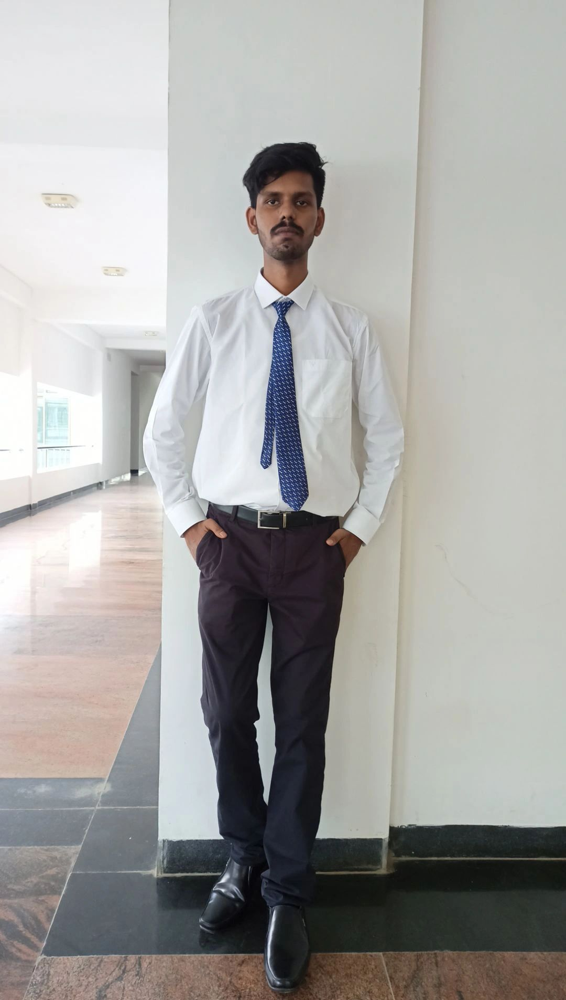

Hi, I am Aditya Bhardwaj, i am a student of Pondicherry University, Karaikal Campus.I am persuing MCA of session(2022-24). Pondicherry University is a Central University situated in India. I belong from Jamshedpur Jharkhand. Jamshedpur is Mostly famous for Tata Company. It is also named as Tatanagar because of Jamshedji Nasarwanji Tata(Founder of World Famous Tata Company). i belong from Neutral Family. My Father is an Advocate and my mother is a House Wife. I persued my UG(B.Sc Mathematics Honours) from Kolhan University.Currently I am pursuing my MCA degree from Pondicherry Central University.. My personal interest in Web Development. Currently i am working on my skill to improve it so that it will make a difference from others . I Completed BSC Mathematics honours in ug..My hobby is Playing chess, Social Work, Learning new things.
